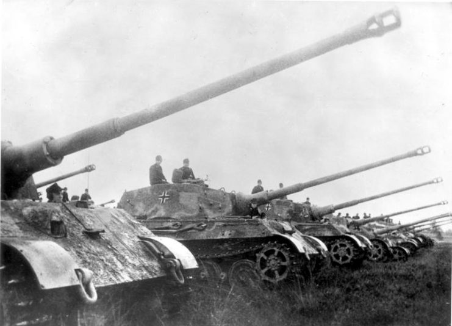

Giới thiệu

Tiger II, còn được biết đến với tên gọi King Tiger hoặc Königstiger, là xe tăng hạng nặng do Đức phát triển trong giai đoạn cuối Chiến tranh thế giới thứ hai. Xe nổi tiếng với lớp giáp cực dày và pháo 88 mm có khả năng tiêu diệt hầu hết xe tăng Đồng Minh ở khoảng cách rất xa.
Thông số kỹ thuật
- Khối lượng: khoảng 69,8 tấn
- Kíp lái: 5 người
- Pháo chính: 88 mm KwK 43 L/71
- Tốc độ tối đa: khoảng 41 km/h
- Giáp trước: tối đa 180 mm
Lịch sử hoạt động
Tiger II bắt đầu được đưa vào chiến đấu từ năm 1944 và xuất hiện tại Mặt trận phía Tây cũng như Mặt trận phía Đông. Mặc dù sở hữu hỏa lực và khả năng phòng thủ rất mạnh, xe thường gặp khó khăn do trọng lượng lớn, tiêu hao nhiên liệu cao và độ tin cậy cơ khí chưa tốt.
Đánh giá
Tiger II được xem là một trong những xe tăng mạnh nhất của Thế chiến II. Tuy nhiên, chi phí sản xuất cao, số lượng ít và nhiều vấn đề kỹ thuật khiến nó không thể thay đổi cục diện chiến tranh.